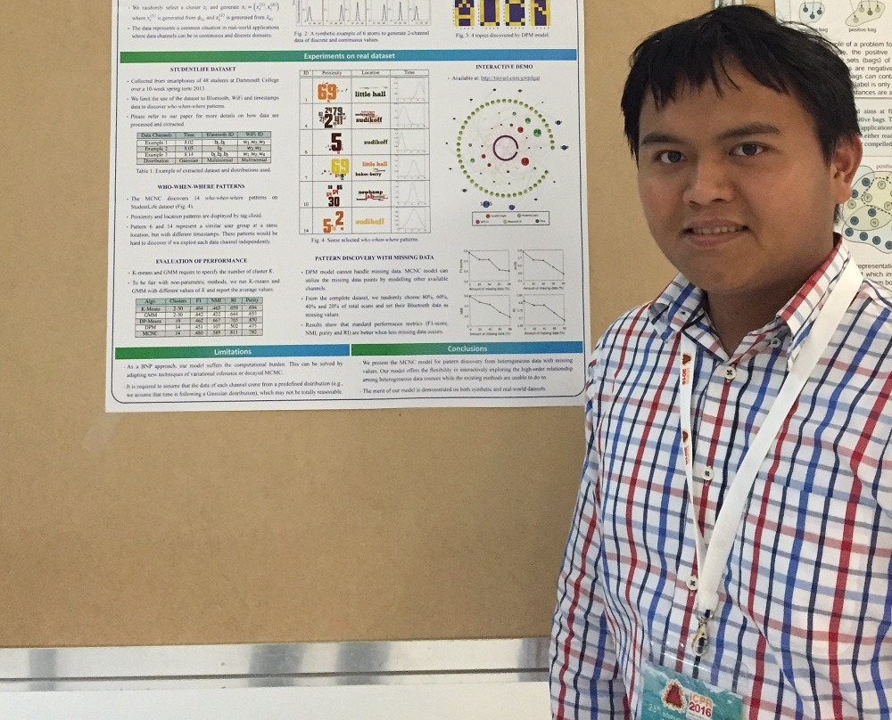

Dr Vu Nguyen
Associate Research Fellow

I am currently working as an Associate Research Fellow at PRADA, Deakin University with ARC Laureate Prof Svetha Venkatesh, Dr Sunil Gupta and Dr Santu Rana. I finished my PhD in the same department where I am very fortunate to be advised by Prof. Dinh Phung and Prof. Svetha Venkatesh in 2015.
Recruitment
- Several Postdoc Positions available in Machine Learning, Artificial Intelligent and Bayesian Optimization. AUD $83k+ pa for 2-5 years.
- Several PhD Scholarships available in Machine Learning, Artificial Intelligent and Bayesian Optimization. AUD $26k+ pa for 3 years.
- These positions are at PRADA under Prof. Svetha Venkatesh. Please email your CV to v.nguyen@deakin.edu.au if you are interested in.
Research Interests
- Bayesian Optimization
- Bayesian Nonparametric, Multilevel Modelling, Label-drift Classification, Abnormality Detection
Awards
- Vice Chancellor Award for Outstanding Contribution, Deakin University 2017
- Selected as Best Papers for KAIS - ICDM 2017
- Best Poster Award - ICME 2017, 4th World Congress on Integrated Computational Materials Engineering 2017
- Best Paper Runner up Award and Best Poster Award - ACML 2016
- Finalist Best Intel Student Paper Award - Track 5 ICPR 2016
- Finalist Best IBM Student Paper Award – Track 1 ICPR 2016
- Heidelberg Laurate Forum 2015, Top 200 young scientist around the world to interact with the Laurates in Germany
- First Prize in Student Research Competition 2011, University of Science, Vietnam National University HCM
- Travel Grant Machine Learning Summer School, Singapore, 2011.
Selected Papers

V. Nguyen, S. Gupta, S. Rana, C. Li, S. Venkatesh
Bayesian Optimization in Weakly Specified Search Space
In Proceedings of the IEEE International Conference on Data Mining, (ICDM), accepted, 2017.
Abstract Code Selected as Best Papers, Invited for KAIS PDF
Bayesian Optimization in Weakly Specified Search Space
In Proceedings of the IEEE International Conference on Data Mining, (ICDM), accepted, 2017.
Abstract Code Selected as Best Papers, Invited for KAIS PDF


V. Nguyen, S. K. Gupta, S. Rana, C. Li, S. Venkatesh
A Bayesian Nonparametric Approach for Multi-label Classification
In Proceedings of The 8th Asian Conference on Machine Learning, (ACML), pp 254-269, 2016.
Abstract PDF Code Youtube Demo Best Paper Runner Up Award Best Poster Award
A Bayesian Nonparametric Approach for Multi-label Classification
In Proceedings of The 8th Asian Conference on Machine Learning, (ACML), pp 254-269, 2016.
Abstract PDF Code Youtube Demo Best Paper Runner Up Award Best Poster Award


Web Counter